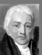

Russian
/English << >>English /Russian
Deutsch/English << >>English
only
Samuel Taylor Coleridge 
1772 - 1834
(�אלכ� �יכמנ �מכ�נטהז)
|
|
| ������� ������� ���‗�� | ||
| � ןנטנמהו הום�... | ||
| �ואכ�םמסע� ט �אםעאחט�, אככודמנט� |
�ואכ�םמסע�
ט �אםעאחט�, אככודמנט�
Time, Real and Imaginary. An Allegory.
On the wide level of a mountain's head,
(I knew not where, but 'twas some faery place),
Their pinions, ostrich-like, for sails outspread,
Two lovely children runs an endless race,
A sister and a brother!
This far outstripped the other;
Yet even runs she with reverted face,
And looks and listens for the boy behind:
For he, alas! Is blind!
O'er rough and smooth with even step he passed,
And knows not whether he be first or last.
Swans sing before they die - 'twere no bad thing
Should certain persons die before they sing
1 All Nature seems at work. Slugs leave their lair--
2 The bees are stirring--birds are on the wing--
3 And Winter slumbering in the open air,
4 Wears on his smiling face a dream of Spring!
5 And I the while, the sole unbusy thing,
6 Nor honey make, nor pair, nor build, nor sing.
7 Yet well I ken the banks where amaranths blow,
8 Have traced the fount whence streams of nectar flow.
9 Bloom, O ye amaranths! bloom for whom ye may,
10 For me ye bloom not! Glide, rich streams, away!
11 With lips unbrightened, wreathless brow, I stroll:
12 And would you learn the spells that drowse my soul?
13 Work without Hope draws nectar in a sieve,
14 And Hope without an object cannot live.
1 It is an ancyent Marinere,
2 And he stoppeth one of three :
3 " By thy long grey beard and thy glittering eye
4 " Now wherefore stoppest me ?
5 " The Bridegroom's doors are open'd wide
6 "And I am next of kin ;
7 " The Guests are met, the Feast is set,--
8 " May'st hear the merry din.
9 But still he holds the wedding-guest--
10 There was a Ship, quoth he--
11 "Nay, if thou'st got a laughsome tale,
12 "Marinere! come with me."
13 He holds him with his skinny hand,
14 Quoth he, there was a Ship--
15 "Now get thee hence, thou grey-beard Loon!
16 "Or my Staff shall make thee skip.
17 He holds him with his glittering eye--
18 The wedding guest stood still
19 And listens like a three year's child;
20 The Marinere hath his will.
21 The wedding-guest sate on a stone,
22 He cannot chuse but hear:
23 And thus spake on that ancyent man,
24 The bright-eyed Marinere.
25 The Ship was cheer'd, the Harbour clear'd--
26 Merrily did we drop
27 Below the Kirk, below the Hill,
28 Below the Light-house top.
29 The Sun came up upon the left,
30 Out of the Sea came he:
31 And he shone bright, and on the right
32 Went down into the Sea.
33 Higher and Higher every day,
34 Till over the mast at noon--
35 The wedding-guest here beat his breast,
36 For he heard the loud bassoon.
37 The Bride hath pac'd into the Hall,
38 Red as a rose is she;
39 Nodding their heads before her goes
40 The merry Minstralsy.
41 The wedding-guest he beat his breast
42 Yet he cannot chuse but hear:
43 And thus spake on that ancyent Man,
44 The bright-eyed Marinere.
45 Listen, Stranger! Storm and Wind,
46 A Wind and Tempest strong!
47 For days and weeks it play'd us freaks--
48 Like Chaff we drove along.
49 Listen, Stranger! Mist and Snow,
50 And it grew wond'rous cauld:
51 And Ice mast-high came floating by
52 As green as Emerauld.
53 And thro' the drifts the snowy clifts
54 Did send a dismal sheen;
55 Ne shapes of men ne beasts we ken--
56 The Ice was all between.
57 The Ice was here, the Ice was there,
58 The Ice was all around:
59 It crack'd and growl'd, and roar'd and howl'd--
60 Like noises of a swound.
61 At length did cross an Albatross,
62 Thorough the Fog it came;
63 And an it were a Christian Soul,
64 We hail'd it in God's name.
65 The Marineres gave it biscuit-worms,
66 And round and round it flew:
67 The Ice did split with a Thunder-fit;
68 The Helmsman steer'd us thro'.
69 And a good south wind sprung up behind,
70 The Albatross did follow;
71 And every day for food or play
72 Came to the Marinere's hollo!
73 In mist or cloud on mast or shroud
74 It perch'd for vespers nine,
75 Whiles all the night thro' fog-smoke white
76 Glimmer'd the white moon-shine.
77 "God save thee, ancyent Marinere!
78 "From the fiends that plague thee thus--
79 "Why look'st thou so?"--with my cross bow
80 I shot the Albatross.
81 The Sun came up upon the right,
82 Out of the Sea came he;
83 And broad as a weft upon the left
84 Went down into the Sea.
85 And the good south wind still blew behind,
86 But no sweet Bird did follow
87 Ne any day for food or play
88 Came to the Marinere's hollo!
89 And I had done an hellish thing
90 And it would work 'em woe;
91 For all averr'd, I had kill'd the Bird
92 That made the Breeze to blow.
................................................................
|
|
© 2001 Elena and Yacov Feldman